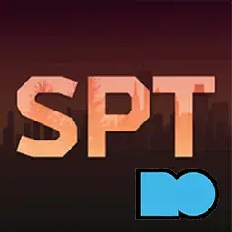

Mod
SPTarkov ModOrganizer 2 Plugin
- Downloads
- 978
- Favourites
- 13
- Mod lists
- 9
Manage SPT 4.x mods with Mod Organizer 2. Inspired by SPT ModOrganizer Integration.
Please report any problems in the comments.
Features
- Adds a Launch SPT button that starts the SPT server, then opens the launcher when it is ready.
- Adds separate SPT Server and SPT Launcher entries for troubleshooting.
- Installs client mods to
BepInEx/plugins. - Installs server mods to
SPT/user/mods. - Keeps your profiles, logs, launcher data, certificates, and settings in your real SPT folder.
- Keeps server mods managed by MO2, so you can enable or disable them without manually moving files.
- Recognizes common SPT mod archive layouts during installation.
Requirements
- Mod Organizer 2 2.5.x
- SPT 4.x
Installation
- Extract the plugin into your Mod Organizer 2 installation folder.
- Start MO2 and create or select an SPT instance.
- When MO2 asks for your game folder, select your SPT client root.
Choose the folder that contains:
EscapeFromTarkov.exeBepInExwinhttp.dllSPT
For example, choose C:\Games\SPT, not C:\Games\SPT\SPT.
Version
1.1.0
SPT ^4.0.13
Fika: unknown
625 downloads4.0 KB
- Added a new Launch SPT button that starts everything in the right order for you.
- Fixed an issue that could make SPT’s Core Patch fail after using MO2.
- Improved how MO2 saves your SPT profiles, settings, and logs.
- Mod downloads with extra files, such as readmes or setup tools, now install more smoothly.
- Updated the setup and troubleshooting instructions to make common problems easier to fix.
VirusTotal: report 1
Version
1.0.2
SPT ^4.0.13
Fika: unknown
193 downloads3.2 KB
- Better handling of .exe files like SVM, and others
VirusTotal: report 1
Version
1.0.1
SPT ^4.0.13
Fika: unknown
46 downloads3.0 KB
- Added compatibility to 2.5.0 MO2
VirusTotal: report 1
Version
1.0.0
SPT ^4.0.13
Fika: unknown
114 downloads2.9 KB
Initial Release
VirusTotal: report 1